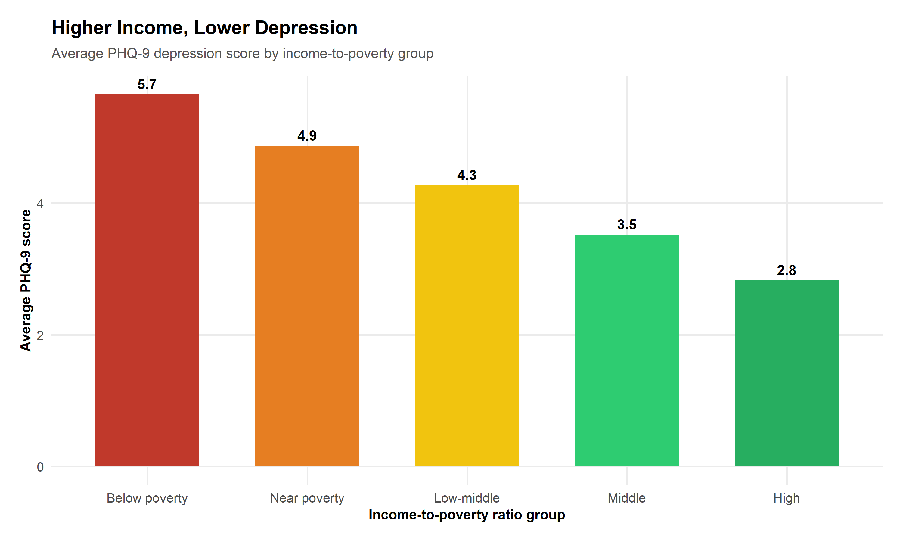
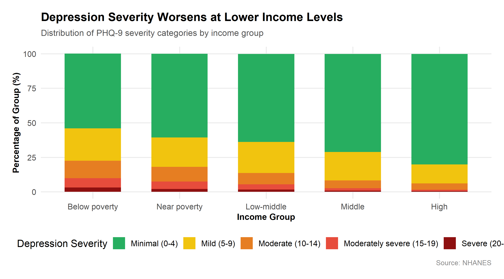
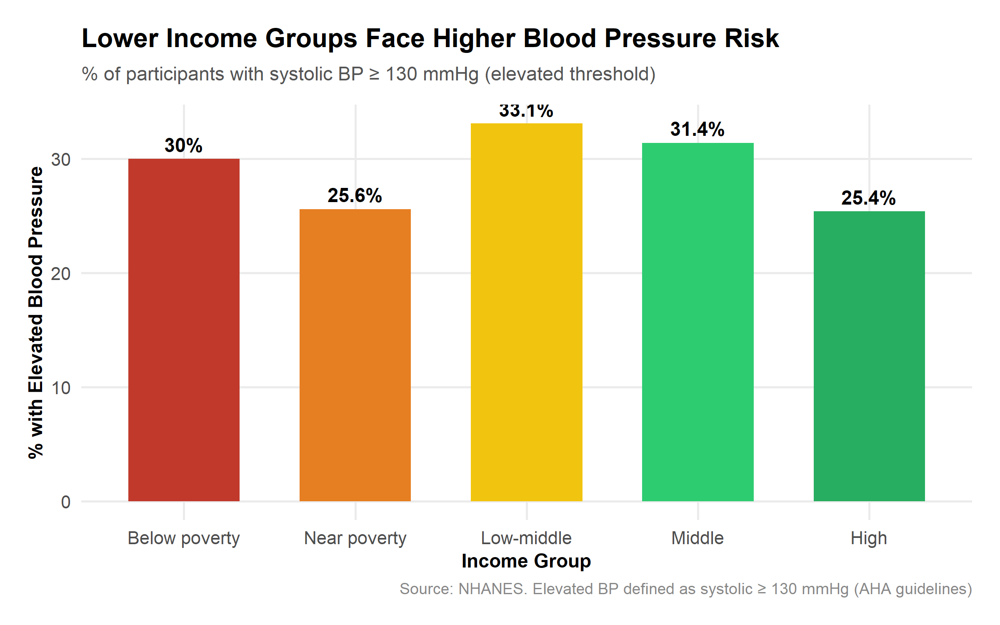
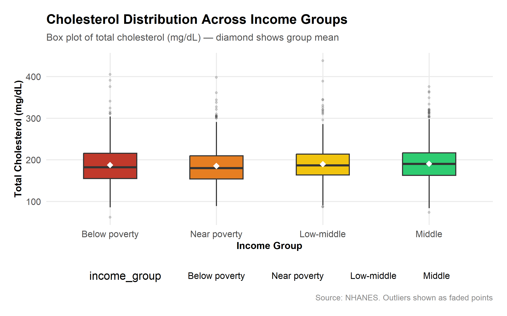
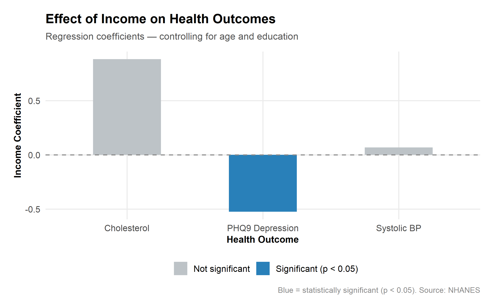

"The circumstances in which people are born, grow, live, work and age are the single most important determinants of good or ill health."
— World Health Organisation, Commission on Social Determinants of Health
Think about two people. One grows up where money is tight — bills are a source of anxiety, nutritious food is a luxury, and a therapist is something other people have. The other grows up comfortable: regular holidays, a good GP, access to a gym. Both live in the same country, breathe the same air. But by middle age, are they really in the same health?
This question sits at the heart of one of the most underappreciated conversations in public health. And while the data here comes from the United States, the story it tells resonates just as sharply in Britain, where inequality has widened steadily over three decades. Using the National Health and Nutrition Examination Survey (NHANES), this analysis examines whether income-to-poverty ratio can predict three key health outcomes: depression, blood pressure, and cholesterol. The findings are striking — and in at least one domain, unambiguous.
What the Data Shows
The cleaned dataset includes 4,138 adults with complete data across all variables, drawn from the NHANES 2017–2018 cycle. Participants were grouped by income-to-poverty ratio into five bands from "Below poverty" to "High."
The headline result from our SQL analysis: average depression scores decrease consistently as income rises. Participants below the poverty line score meaningfully higher on the PHQ-9 depression scale than those in higher income brackets — a gradient that holds even when you control for age and education.

For every one-unit increase in income-to-poverty ratio, PHQ-9 total scores decrease by 0.52 points on average — a relationship that is highly statistically significant (p < 0.0001) even after controlling for age and education level.
In plain terms: the more financial breathing room a person has, the lower their depression score tends to be.
This is not a trivial finding. A PHQ-9 score of 5 or above indicates at least mild depression. The difference in average scores between the lowest and highest income groups in this dataset represents a meaningful clinical gap — the kind of difference that, at a population level, translates to vastly different rates of diagnosed depression, treatment, and long-term mental health outcomes.
The Shape of Depression Across Income Groups
Averages can deceive. A more revealing picture emerges when we look at the full distribution of depression severity within each income group — not just where the average sits, but how many people are experiencing moderate or severe symptoms.

Lower income groups carry a heavier burden of moderate and severe depression — not just marginally higher average scores. Moderate-to-severe depression (PHQ-9 ≥ 10) is the threshold at which clinical intervention is typically recommended. Lower income is therefore associated not just with feeling slightly worse, but with a significantly higher likelihood of experiencing depression serious enough to warrant treatment.
"People who have limited access to quality housing, education and job opportunities have a higher risk of illness and death."
— WHO World Report on Social Determinants of Health Equity, 2025
For a British reader, this may feel abstract — after all, we have the NHS. But the mechanisms driving this pattern are not uniquely American. Financial stress, housing insecurity, precarious employment, and the inability to afford therapy are features of economic inequality wherever it exists.
Blood Pressure and Cholesterol: A More Complicated Picture
If depression tells a clean story, blood pressure and cholesterol tell a more nuanced one — and that nuance is itself informative.

There is a visible trend in elevated blood pressure rates across income groups, with lower income participants more likely to exceed the 130 mmHg systolic threshold. However, our regression found this did not reach statistical significance once we controlled for age and education (income coefficient: +0.069, p = 0.689). Age was the dominant predictor — systolic BP rises naturally with age, and this effect swamps the income signal.

Cholesterol presents a borderline result: a positive income coefficient of 0.88 (p = 0.057) — just above the conventional significance threshold. This may reflect the fact that higher-income individuals can afford richer diets, or it may simply reflect the complexity of cholesterol metabolism, which is also heavily influenced by genetics and medication not captured here.
Putting It Together: What the Regression Tells Us
The regression analysis models each health outcome as a function of income-to-poverty ratio, age, and education — the three variables available to us that capture socioeconomic and demographic context.
| Health Outcome | Income Coefficient | p-value | R² | Significant? |
|---|---|---|---|---|
| Systolic Blood Pressure | +0.069 | 0.689 | 0.138 | No |
| Total Cholesterol | +0.883 | 0.057 | 0.004 | Borderline |
| PHQ-9 Depression | −0.525 | <0.0001 | 0.068 | Yes ✓ |

The negative coefficient for depression is the most important number in this analysis — higher income predicts lower depression, and this survives controls for both age and education. Blood pressure is dominated by age, and cholesterol remains hard to predict from socioeconomic variables alone. The R² values are modest across all models, which is expected in health data, but an R² of 0.068 for depression still represents a meaningful signal from just three predictors.
Why Does This Happen? The Mechanisms Behind the Numbers
Data can show us that a relationship exists. Understanding why requires us to think carefully about the pathways connecting income to mental health.
Financial stress as a direct cause
The most direct pathway is chronic stress. When money is tight, the daily cognitive load of managing bills and financial uncertainty is relentless. Sustained stress elevates cortisol — and chronic high cortisol is strongly associated with depression, anxiety, and poor sleep.
Access to mental health support
In both the US and UK, private therapy is expensive. NHS waiting lists for talking therapies regularly exceed six months. Higher-income individuals bypass these waits through private services that lower-income people simply cannot afford. When depression strikes, access to treatment is itself income-stratified.
Why physical health markers are noisier
Blood pressure and cholesterol are influenced by a far wider range of factors — genetics, medication, diet, alcohol — that don't map neatly onto income. This is not to say income doesn't matter for physical health (it does), but it means a dataset of this size struggles to isolate the income signal from the noise.
A Note on Causation
Methodology Note
This analysis uses observational, cross-sectional data. The relationships identified are correlational — we cannot conclude that low income causes poor mental health. Depression itself may reduce earning capacity, reversing the causal arrow, and unmeasured variables (childhood adversity, chronic illness) may drive both simultaneously.
Establishing causality would require longitudinal data or causal inference methods such as instrumental variables. The regression models control for age and education, reducing but not eliminating confounding. Findings should be interpreted as strong evidence of association, consistent with a large body of causal evidence from other research designs. Models run using statsmodels OLS in Python; visualisations with ggplot2 in R.
Conclusions
This analysis set out to ask whether income can predict health. For mental health, the answer is a clear and statistically robust yes. For blood pressure and cholesterol, the picture is more complex — age and genetics introduce noise that income alone cannot cut through.
The core finding — higher income is significantly associated with lower depression scores, even controlling for age and education — is consistent with the broader literature on social determinants of health. Economic inequality is not merely a financial problem. It is a public health problem. And if we want a healthier population, the data points clearly toward the upstream causes: the structural conditions in which people live, work, and age.
Data & Reproducibility
All analysis code is available in the accompanying GitHub repository. The dataset is from the NHANES 2017–2018 survey cycle, publicly available from the US Centers for Disease Control. Scripts run sequentially in Python (cleaning, SQL, regression) and R (visualisations) from a single cleaned CSV. Contextual statistics were scraped from the Mental Health Foundation, WHO, and Mental Health America using a Python BeautifulSoup scraper. See the README for full reproduction instructions.